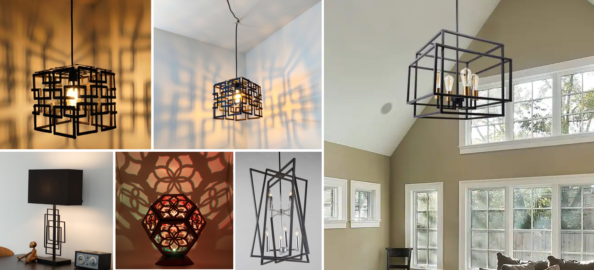

A5: Getting Meshy! and Lamps!
Nov. 8, 2022Mesh!
I browsed Thingiverse and found two meshes that I found interesting: 50 different files of low poly vases and Moai from Easter Island.
Once I got the hang of using MeshBooleanSplit, I had a lot of fun figuring out what parts of the meshes I wanted to split apart and assemble together.
Pictured below, I split the vase in half. I kept the smaller end to make a base. For the Moai, I split it right below the chin and kept the face.
Here is the final product printed (left) and the rendered model in Rhino (right). It looks pretty similar, except the right side is more detailed. Overall, I'm pretty happy with the end result and will definitely continue playing with meshing different STLs together!
Lamp! (Part 1)
I had a lot of ideas when it came to lamps. Ultimately, I wanted to do something that involved geometric shapes and played with shadow. I created a moodboard of what I liked. I really liked the top left design; it reminded me of the Chinese lanterns – so I decided to recreate that for this lamp assignment.
I measured the diameter of the lamp innard in order to design the top piece of my lamp.

Then I got to work in Rhino. I designed a top piece where the lamp innard would be inserted and then the side pieces. I'm still deciding if I want to 3D print this or laser cut. However, due to convenience, I decided to do a test print on the 3D printer.

Next Steps
As for next steps for the next week, I will continue printing the different pieces of the lamp. A big thing is that I have to think about how I would attached the side pieces together... I guess that's a problem for future Kaitlyn to figure out :^)
Acknowledgement
Split Models: Rhino 3D and Physical JoiningResources
MoaiLow Poly Vases
Source Files
Mesh Cura (.stl)Return to Main